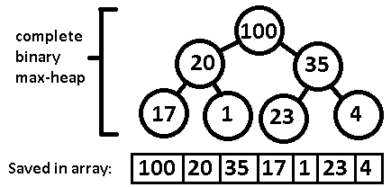

Data Structures (DS)
DS is methods of organizing data for effective use
Array
-
Attributes
- Has size
- Contiguous, Sequential
- Of same type
- Easy to find Position
- Index based
-
C++
array[index]STL: std::array
-
Note
- Bound checking is important
- Large size array allocation may cause Stack Overflow
- When arrays can dynamically change size they are called- Dynamic Array e.g. STL::Vector
-
Applications
- 1-D : String, Vector, hash table, stack, queue etc
- 2-D : Matrix
- nD arrays exists
Stack
-
Attributes
- Last In, First Out (LIFO) or First In, Last Out (FILO)
- Insertion and Deletion from one end only.
- Maintains reference to top of the stack.
- Push, Pop operations
- Check Empty or (occasionally, Check Full) operations
-
C++
STL: std::stack
-
Note
- Stack unwinding takes place
- so prefer RAII over dynamic-allocation (will cause leak)
-
Application
- Expression parsing
- Backtracking
- Function calling
Queue
-
Attributes
- First In, First Out (FIFO), First come first serve
- Insertion from one end, removal from other end with O(1)
- Maintains front and back of the queue.
- Bounded queue has limited fixed number of items
- Can be implemented as linked-list or deque
-
C++
STL: std::queue- Wraps around std::deque with limited functions
-
Note
- Operations: front, back, push at end, pop from front, empty
- Implementation: Deque, Priority Queue, Circular Queue
Deque: Double Ended Queue
-
Attributes
- Allows 'fast' Insert or Delete items from both ends
-
C++
STL: std::deque- Typical implementations use a sequence of individually allocated fixed-size arrays.
- This means, for indexed access, two pointer dereferences are performed
- Operations: front, back, push_front, push_back, pop_front, pop_back
- Automatically expands/contracts
- Random Access: O(1)
- Insert/Delete (at end): O(1)
- Insert/Delete (in middle): O(n)
-
Note
Priority Queue
-
Attributes
- Elements are added in a list (like Queue) in 'sorted' fashion Every element has certain priority. Items are comparable.
- Usually implemented as heap (internal implementation). Heap are internally implemented as 'tree'.
- However, this implementation of tree-heap is special that it follows a property:
- Property is: Either the heap is 'max-heap' or 'min-heap'
- 'max-heap': All parent nodes have higher value than its children
- 'min-heap': All parent-nodes have smaller value than its children
- Construction : O(n), Polling (removing element) : O(logn), Peeking: O(1), Adding: O(logn)
-
C++
STL: std::priority_queue- Main operations: top(), push(), pop()
-
Note
- Operations: is_empty, insert_with_priority, pull_highest_priority_element
-
Applications
- Shortest path algorithm
- Dynamically fetch 'next best' or 'next worst' element
Circular Queue
-
Attributes
- IMP: FIFO and Fixed Size
- IMP: Effective use of space
- FIFO as Queue
- AKA Ring Buffer
- AKA Cyclic Buffer
- Uses fixed size buffer as if it were connected end to end
- Maintains two pointers, 1 at Head, 1 at Tail
- When Head == Tail, Ring is EMPTY
- When Head == Tail + 1, Ring is FULL
-
C++
boost::circular_buffer
-
Note
- Useful in Producer-Consumer problem
- In some cases - May choose to overwrite old data if consumer not able to keep-up (e.g. Audio Generator)
- My simple C++ implementation of: circular_buffer
Linked List
-
Attributes
- Dynamically allocated nodes
- Maintains reference to next node in sequence
- Variations:
- (1) Singly: Points to next 1 node
- (2) Doubly: Points to next and prev node
- (3) Multiply (2+ references) linked list
- (4) Circular linked list: Last node points to start
- (5) Hash linking: Links are stored separately, but in same order as that of data-array.
-
C++
- Doubly Linked List: STL:
std::list - Circular Buffer:
boost::circular_buffer
- Doubly Linked List: STL:
-
Note
- Easy insert/delete operations
- Disadvantages, (1) need to traverse nodes to reach an element
- (2) incontiguously kept nodes, so Cache Misses are more
- (3) Random access not possible
- Length of LL is number of items in the list
- To detect 'loop' - (a) put node addresses in Hash table and check Hashtable with every visit (b) Mark visited notes as visited (c) Floyd's cycle-finding algorithm - two pointers (X & Y) Move X by one and Y by 2. If X == Y then loop found
- http://cslibrary.stanford.edu/103/LinkedListBasics.pdf
Circular Linked List
-
Attributes
- There is no NULL at the end; last node is connected to first node
- Advantages: Can start traversing from any node; so efficient; and traverse till it doesn't revisit same node
- Can be used in round robin scheduling
- Used by OS, in time sharing problem
-
C++
-
Note
- To check if list is circular - start from Head, if iterator reaches null then its not circular, if it reaches Head the it is Circular list.
Hash Table
-
Attributes
- Hash Table is Associative in nature (Index -> Data) as array
- Hash table uses 'hash function' to compute index
- index points to array of 'buckets' or 'slots'
- Hashing is a process of indexing and retrieving data elements.
- Hash Function: H(K), Converts big size Data to Hash Key
- index = hash_function(key) % array_size
- Data access is fast - irrespective of data-size
- Helps to avoid 'non-linear' access time
- There is a possibility to get collisions
- collision resolution strategies are multiple. One such method is, to maintain linked-list (or BST etc) for (overflow) values at an index.
-
C++
-
STL: std::unordered_map, unordered_set, unordered_multiset, unordered_multimap
-
-
Note
- Constant time operations O(1)
- Hash functions are expected to be (1) fast and (2) minimize collisions
- CRC (cyclic redundancy checks) are one of the hash-functions
- MD-1/2/3/4/5/6 and SHA-1/256/512 are also hash functions.
Heap
-
Attributes
- tree-based but with a property called 'heap property'
- children are either 'greater' / 'lesser' than parent
- if all parent nodes are 'greater' than their children, then its a max-heap
- if all parent nodes are 'lesser' than their children, then its a min-heap
-
C++
-
STL has: make_heap, push_heap, pop_heap algorithms -
STL has: std::priority_queue which is based on heap implementation
-
-
Note
- Operations: insert, replace, find-max, delete etc
- Insertion takes O(log (k) )
-
Applications
- Heap sort, Priority Queue, Graph algorithms, min/max selection algorithms
- Example of a complete binary max-heap: 
Tree
-
Attributes
- Hierarchical data-structure is collection of nodes (starting at a root node), where each parent node has 1 or more children and each children has only 1 (non-self) parent.
-
C++
-
Note
- Terminology: Node, Root, Parent, Child, Siblings (nodes having same parent), Neighbor (parent or child), Descendant/Sub-child (nodes reachable from parent), Ancestor (nodes reachable from child to parent), Leaf (node with no children), Degree (number of children, for leaf degree zero), Degree of tree (degree of root), Edge (connection between two nodes), Path (sequence of nodes-edges connecting a node with a descendant), Distance (number of edges between two nodes), Depth (distance between a node and root), Level (1 + Depth), Height (number of eddges on the longest path between a node and a descendant leaf), Width (number of nodes on a level), Breadth (number of leaves), Height of a tree (height of root node), Forest (set of disjoint trees), Sub-tree (a node and all descendants of it), Ordered Tree (specific order for children is maintained), Tree size (number of nodes in the tree)
Binary Tree
-
Attributes
- Each node has utmost 2 children
- At each level, ( 2 ^ level ) nodes possible
- max tree size = 2^(h+1) - 1
- min tree size = h+1
Level Max nodes possible 0 (at root) 1 1 2 2 4 3 8 -
C++
-
Note
- Full/Proper/Strict Binary Tree: Each node either has 0 or 2 children
- Perfect Binary Tree: All internal nodes have 2 children, all leaf nodes at same level
Binary Search Tree (BST)
-
Attributes
- Nodes are ordered / sorted
- Each node has 2 subtrees
- Items on left are smaller from parent
- Items on right are right from parent
-
C++
-
Note
Red-Black Tree
-
Attributes
- These are special Binary Search Tree - these are Balanced Search Trees
- Guaranteed height of O(log n)
- A node is either red / black. Root and leaves (nil/leaf-node) always black.
- If node is red, its children are black.
- All paths from a node to its NIL descendants contain the same number of black nodes.
-
C++
STL's set, map, multimap, multiset
-
Note
Graph
-
Attributes
- Un-directional graph:
- Directional graph:
-
C++
-
Note